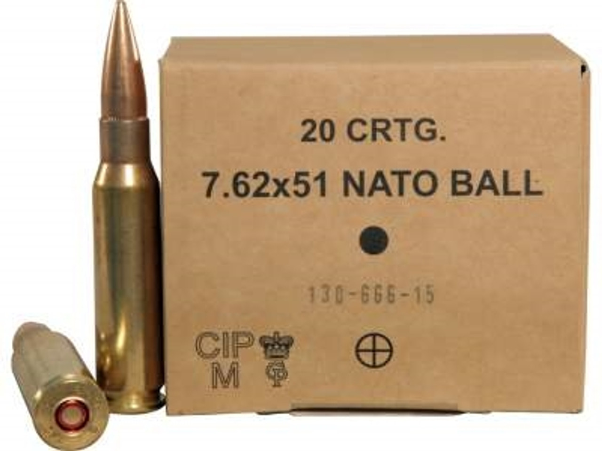
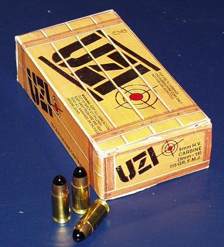
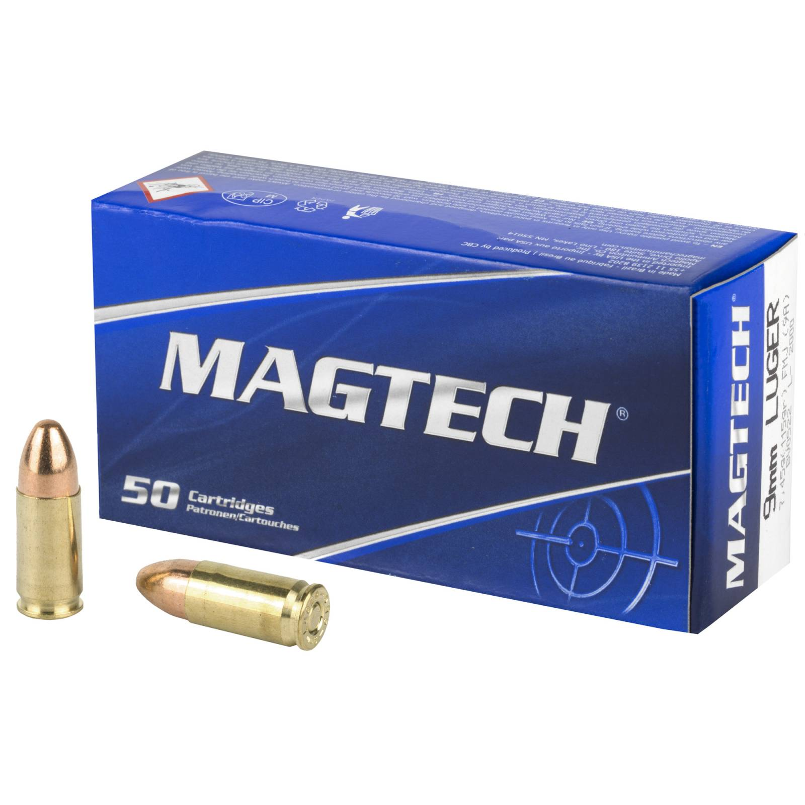

Töltények
Vásároj töltényt, ne foggyon ki a munícióból.

7.62mm nato lövedék
4500(ft/doboz)

76mm shotgun lövedék
5000(ft/doboz)

19mm Parabellum
4000(ft/doboz)

9mm lövedék
3000(ft/doboz)

denix mk2 gránát
6000(ft/db)